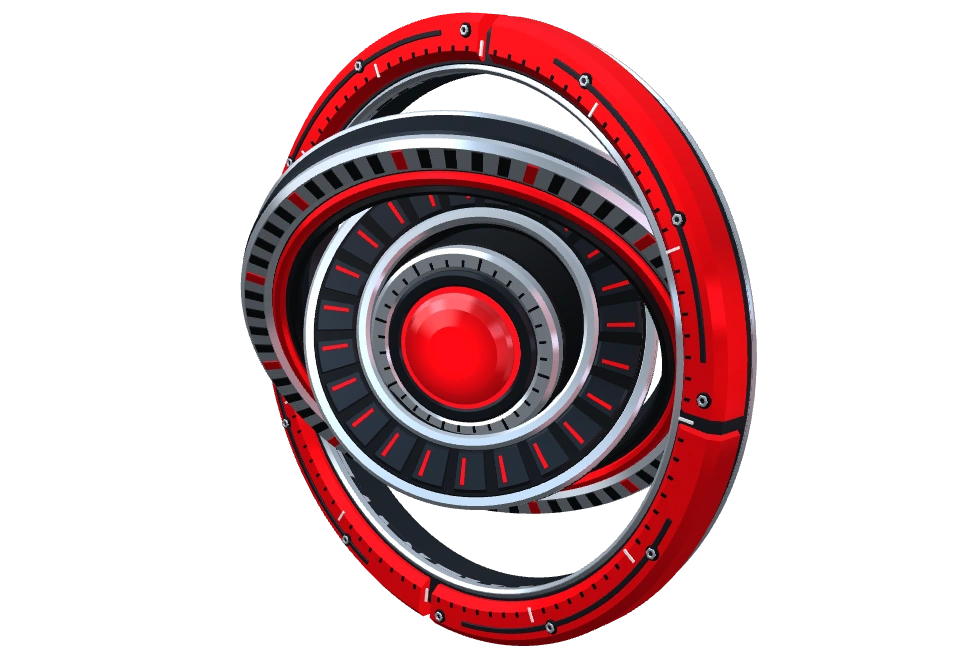

THE STRONGEST BATTLEGROUNDS
UnfairAdvantage
Try the hub in your browser. Draw a dash for Instant Twisted or Instant Lethal, then replay it from any angle.

Hub features
Choose a tab to see its controls.
Inside the hub
Open a card, flip a switch, or use Quick find. Everything here runs in your browser.
Labs
Draw two different dash paths, replay a timing trace, or compare animation frames using sample data.
MOVEMENT / 01
Dash Lab
Draw your own front-dash pattern for Instant Lethal or Instant Twisted.
Questions
Do the website controls change anything in Roblox?
No. The tour and labs run in your browser. They don’t connect to a game or change its settings.
Can I draw different patterns for both moves?
Yes. Dash Lab keeps one sketch for Instant Twisted and one for Instant Lethal while the page is open. Switching moves won’t replace the other sketch.
Do I need an account for the hub tour or labs?
No. The tour and labs are open to everyone. Website sign-in is separate and doesn’t grant a Roblox license.